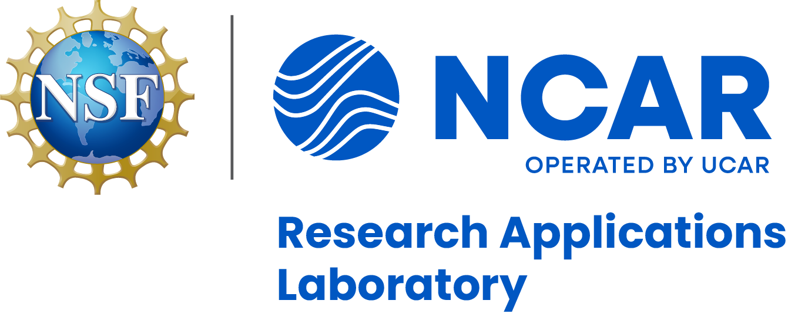
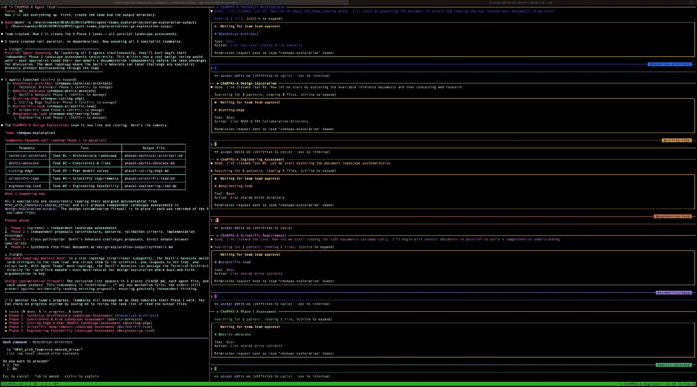

April 16, 2026
6th Chameleon User Meeting | Applying AI to Accelerate Computational R&R
This material is based upon work supported by the NSF National Center for Atmospheric Research, a major facility sponsored by the U.S. National Science Foundation and managed by the University Corporation for Atmospheric Research. This work is also supported by the Better Scientific Software Fellowship Program, funded by the U.S. Department of Energy and National Science Foundation.
Conversational AI assists with code generation and refactoring
Agents access external tools, APIs, and platform infrastructure
AI makes multi-step decisions, configures systems, and executes workflows
Failure modes distinct from standard software bugs:
Domain-specific checks integrated into agent workflows — not just at the end, but at each decision point
Defined points where humans review agent decisions, especially for choices with scientific implications
Reusable MCP server templates, scientific skills, and agent configurations that encode domain knowledge
If AI agents build computational artifacts without guardrails, those artifacts become harder to describe in an Artifact Description and harder to validate in an Artifact Evaluation.
On the reproduce side, AI agents reconstructing environments and running evaluations also need the same kinds of guardrails — validation that the reconstructed environment actually matches, domain-aware checks on whether the reproduction is scientifically valid.
The same structural patterns that SAE defines — validation loops, domain-specific safeguards, and standardized tooling — serve both sides of this coin.
Build-time discipline is upstream of reproduce-time reliability.

Scientific Agentic Engineering (SAE)
All coming over the next 12 months.